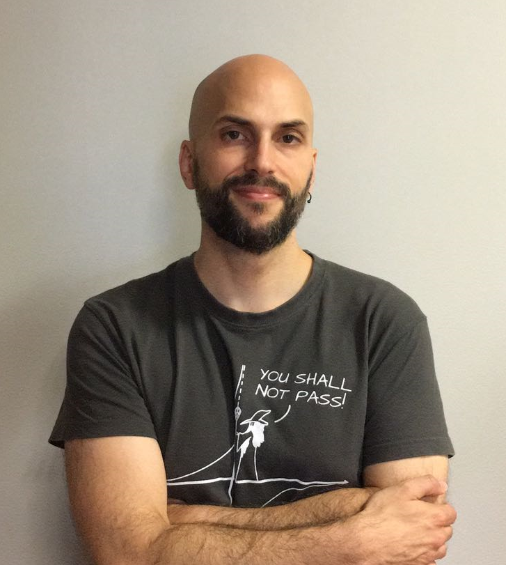

Welcome to my website!
I am Associate Prof. in the Dept. of Social Psychology at University of Granada, and researcher at the Mind, Brain and Behavior Research Center (CIMCYC). My research focuses on human causal reasoning and the cognitive biases (such as causal illusion) that lead us to make irrational decisions. Although this research is primarily theoretical and my methodology is experimental, this line of work has many applications to diverse issues such as pseudoscience, pseudotherapies, and online misinformation. I am currently working on designing strategies to reduce cognitive biases and mitigate their impact. Here you can see my recent publications, projects, talks, and social media.
Download CV (PDF)